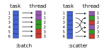

ChunkSplitters.jl
ChunkSplitters.jl facilitate the splitting of the workload of parallel jobs independently on the number of threads that are effectively available. It allows for a finer, lower level, control of the load of each task.
The way chunks are indexed is also recommended for guaranteeing that the workload if completely thread safe (without the use threadid() - see here).
Installation
Install with:
julia> import Pkg; Pkg.add("ChunkSplitters")The chunks iterator
The main interface is the chunks iterator:
chunks(array::AbstractArray, nchunks::Int, type::Symbol=:batch)This iterator returns a Tuple{UnitRange,Int} with the range of indices of array to be iterated for each given chunk. If type == :batch, the ranges are consecutive. If type == :scatter, the range is scattered over the array.
The chunking types are illustrated in the figure below:

In the :batch type, the tasks are associated to each thread until the fraction of the workload of that thread is complete. In the :scatter type, the tasks are assigned in an alternating fashion. If the workload is uneven and correlated with its position in the input array, the :scatter option will be more efficient.
Examples
Here we illustrate which are the indexes of the chunks returned by each iterator:
julia> using ChunkSplitters
julia> x = rand(7);
julia> Threads.@threads for (xrange,ichunk) in chunks(x, 3, :batch)
@show (xrange, ichunk)
end
(xrange, ichunk) = (1:3, 1)
(xrange, ichunk) = (6:7, 3)
(xrange, ichunk) = (4:5, 2)
julia> Threads.@threads for (xrange,ichunk) in chunks(x, 3, :scatter)
@show (xrange, ichunk)
end
(xrange, ichunk) = (2:3:5, 2)
(xrange, ichunk) = (1:3:7, 1)
(xrange, ichunk) = (3:3:6, 3)If the third argument is ommitted (i. e. :batch or :scatter), the default :batch option is used.
Now, we illustrate the use of the iterator in a practical example:
julia> using BenchmarkTools
julia> using ChunkSplitters
julia> function sum_parallel(f, x; nchunks=Threads.nthreads())
s = fill(zero(eltype(x)), nchunks)
Threads.@threads for (xrange, ichunk) in chunks(x, nchunks)
for i in xrange
s[ichunk] += f(x[i])
end
end
return sum(s)
end
julia> x = rand(10^7);
julia> Threads.nthreads()
12
julia> @btime sum(x -> log(x)^7, $x)
115.026 ms (0 allocations: 0 bytes)
-5.062317099586189e10
julia> @btime sum_parallel(x -> log(x)^7, $x; nchunks=12)
33.723 ms (77 allocations: 6.55 KiB)
-5.062317099581316e10Lower-level chunks function
The package also provides a lower-level chunks function:
chunks(array::AbstractArray, ichunk::Int, nchunks::Int, type::Symbol=:batch)that returns a range of indexes of array, given the number of chunks in which the array is to be split, nchunks, and the current chunk number ichunk.
Example
The example shows how to compute a sum of a function applied to the elements of an array, and the effect of the parallelization and the number of chunks in the performance:
julia> using BenchmarkTools
julia> using ChunkSplitters: chunks
julia> function sum_parallel(f, x; nchunks=Threads.nthreads())
s = fill(zero(eltype(x)), nchunks)
Threads.@threads for ichunk in 1:nchunks
for i in chunks(x, ichunk, nchunks)
s[ichunk] += f(x[i])
end
end
return sum(s)
end
julia> x = rand(10^7);
julia> Threads.nthreads()
12
julia> @btime sum(x -> log(x)^7, $x)
122.085 ms (0 allocations: 0 bytes)
-5.062317099586189e10
julia> @btime sum_parallel(x -> log(x)^7, $x; nchunks=4)
34.802 ms (74 allocations: 6.61 KiB)
-5.062317099581316e10Examples of different splitters
For example, if we have an array of 7 elements, and the work on the elements is divided into 3 chunks, we have (using the default type = :batch option):
julia> using ChunkSplitters
julia> x = rand(7);
julia> chunks(x, 1, 3)
1:3
julia> chunks(x, 2, 3)
4:5
julia> chunks(x, 3, 3)
6:7And using type = :scatter, we have:
julia> chunks(x, 1, 3, :scatter)
1:3:7
julia> chunks(x, 2, 3, :scatter)
2:3:5
julia> chunks(x, 3, 3, :scatter)
3:3:6Load balancing considerations
Here we define two functions which (artificially) result in very uneven workload distributions among tasks. Basically, we sum log(x[i])^7 for x[i] being the elements of an array. However, each task has to sum a different number of elements, defined in a workload vector. The workload vector will have 64 tasks, with a workload that decreases for each task.
The functions are defined using Threads.@threads or Threads.@sync/Threads.@spawn macros of base julia, which imply different possibilities of load balancing.
We create a very unbalanced workload, with:
julia> x = rand(10^4); work_load = collect(div(10^4,i) for i in 1:64);
julia> using UnicodePlots
julia> lineplot(work_load; xlabel="task", ylabel="workload")
┌────────────────────────────────────────┐
10 000 │⢸⠀⠀⠀⠀⠀⠀⠀⠀⠀⠀⠀⠀⠀⠀⠀⠀⠀⠀⠀⠀⠀⠀⠀⠀⠀⠀⠀⠀⠀⠀⠀⠀⠀⠀⠀⠀⠀⠀⠀│
│⢸⠀⠀⠀⠀⠀⠀⠀⠀⠀⠀⠀⠀⠀⠀⠀⠀⠀⠀⠀⠀⠀⠀⠀⠀⠀⠀⠀⠀⠀⠀⠀⠀⠀⠀⠀⠀⠀⠀⠀│
│⢸⠀⠀⠀⠀⠀⠀⠀⠀⠀⠀⠀⠀⠀⠀⠀⠀⠀⠀⠀⠀⠀⠀⠀⠀⠀⠀⠀⠀⠀⠀⠀⠀⠀⠀⠀⠀⠀⠀⠀│
│⢸⠀⠀⠀⠀⠀⠀⠀⠀⠀⠀⠀⠀⠀⠀⠀⠀⠀⠀⠀⠀⠀⠀⠀⠀⠀⠀⠀⠀⠀⠀⠀⠀⠀⠀⠀⠀⠀⠀⠀│
│⢸⠀⠀⠀⠀⠀⠀⠀⠀⠀⠀⠀⠀⠀⠀⠀⠀⠀⠀⠀⠀⠀⠀⠀⠀⠀⠀⠀⠀⠀⠀⠀⠀⠀⠀⠀⠀⠀⠀⠀│
│⠸⡀⠀⠀⠀⠀⠀⠀⠀⠀⠀⠀⠀⠀⠀⠀⠀⠀⠀⠀⠀⠀⠀⠀⠀⠀⠀⠀⠀⠀⠀⠀⠀⠀⠀⠀⠀⠀⠀⠀│
│⠀⡇⠀⠀⠀⠀⠀⠀⠀⠀⠀⠀⠀⠀⠀⠀⠀⠀⠀⠀⠀⠀⠀⠀⠀⠀⠀⠀⠀⠀⠀⠀⠀⠀⠀⠀⠀⠀⠀⠀│
workload │⠀⡇⠀⠀⠀⠀⠀⠀⠀⠀⠀⠀⠀⠀⠀⠀⠀⠀⠀⠀⠀⠀⠀⠀⠀⠀⠀⠀⠀⠀⠀⠀⠀⠀⠀⠀⠀⠀⠀⠀│
│⠀⡇⠀⠀⠀⠀⠀⠀⠀⠀⠀⠀⠀⠀⠀⠀⠀⠀⠀⠀⠀⠀⠀⠀⠀⠀⠀⠀⠀⠀⠀⠀⠀⠀⠀⠀⠀⠀⠀⠀│
│⠀⢱⠀⠀⠀⠀⠀⠀⠀⠀⠀⠀⠀⠀⠀⠀⠀⠀⠀⠀⠀⠀⠀⠀⠀⠀⠀⠀⠀⠀⠀⠀⠀⠀⠀⠀⠀⠀⠀⠀│
│⠀⠸⡀⠀⠀⠀⠀⠀⠀⠀⠀⠀⠀⠀⠀⠀⠀⠀⠀⠀⠀⠀⠀⠀⠀⠀⠀⠀⠀⠀⠀⠀⠀⠀⠀⠀⠀⠀⠀⠀│
│⠀⠀⢇⠀⠀⠀⠀⠀⠀⠀⠀⠀⠀⠀⠀⠀⠀⠀⠀⠀⠀⠀⠀⠀⠀⠀⠀⠀⠀⠀⠀⠀⠀⠀⠀⠀⠀⠀⠀⠀│
│⠀⠀⠈⢆⡀⠀⠀⠀⠀⠀⠀⠀⠀⠀⠀⠀⠀⠀⠀⠀⠀⠀⠀⠀⠀⠀⠀⠀⠀⠀⠀⠀⠀⠀⠀⠀⠀⠀⠀⠀│
│⠀⠀⠀⠀⠈⠲⢤⣀⣀⠀⠀⠀⠀⠀⠀⠀⠀⠀⠀⠀⠀⠀⠀⠀⠀⠀⠀⠀⠀⠀⠀⠀⠀⠀⠀⠀⠀⠀⠀⠀│
0 │⠀⠀⠀⠀⠀⠀⠀⠀⠈⠉⠉⠓⠒⠒⠒⠒⠒⠦⠤⠤⠤⠤⠤⠤⠤⠤⠤⠤⠤⠤⠤⠤⠤⠤⣀⣀⣀⠀⠀⠀│
└────────────────────────────────────────┘
⠀0⠀⠀⠀⠀⠀⠀⠀⠀⠀⠀⠀⠀⠀⠀⠀⠀⠀⠀⠀⠀⠀⠀⠀⠀⠀⠀⠀⠀⠀⠀⠀⠀⠀⠀⠀⠀⠀70⠀
⠀⠀⠀⠀⠀⠀⠀⠀⠀⠀⠀⠀⠀⠀⠀⠀⠀⠀⠀task⠀⠀⠀⠀⠀⠀⠀⠀⠀⠀⠀⠀⠀⠀⠀⠀⠀⠀⠀ Thus, the first tasks will operate on all elements of the array, while the final tasks will perform a sum over much less elements.
Using @threads
First, we consider the case where the @threads macro is used. The threaded operation is:
julia> using Base.Threads, ChunkSplitters
julia> function uneven_workload_threads(x, work_load; nchunks::Int, chunk_type::Symbol)
s = fill(zero(eltype(x)), nchunks)
@threads for (xrange, ichunk) in chunks(work_load, nchunks, chunk_type)
for i in xrange
s[ichunk] += sum(log(x[j])^7 for j in 1:work_load[i])
end
end
return sum(s)
endUsing nchunks == nthreads(), which are 8 in this case, we get the following timings:
julia> @btime uneven_workload_threads($x, $work_load; nchunks=8, chunk_type=:batch)
1.451 ms (46 allocations: 4.61 KiB)
-1.5503788131612685e8
julia> @btime uneven_workload_threads($x, $work_load; nchunks=8, chunk_type=:scatter)
826.857 μs (46 allocations: 4.61 KiB)
-1.5503788131612682e8Therefore, it is possible to deal with the unbalaced workload with the :scatter option, since there is, here, a correlation between chunk index and workload. However, if that is not known, one can deal with the workload by increasing the number of chunks, if using the @sync/@spawn option:
Using @sync/@spawn
The same pattern can be used if the @sync/@spawn macros where used for spawning threads. The difference is that the spawned tasks are not bound to any thread, such that varying the number of chunks can have an effect on the load balancing.
The function is similar to the previous one,
julia> function uneven_workload_spawn(x, work_load; nchunks::Int, chunk_type::Symbol)
s = fill(zero(eltype(x)), nchunks)
@sync for (xrange, ichunk) in chunks(work_load, nchunks, chunk_type)
@spawn for i in xrange
s[ichunk] += sum(log(x[j])^7 for j in 1:work_load[i])
end
end
return sum(s)
endAnd we get a similar speedup when using the :scatter chunking style:
julia> @btime uneven_workload_spawn($x, $work_load; nchunks=8, chunk_type=:batch)
1.398 ms (59 allocations: 5.08 KiB)
-1.5503788131612685e8
julia> @btime uneven_workload_spawn($x, $work_load; nchunks=8, chunk_type=:scatter)
745.953 μs (59 allocations: 5.08 KiB)
-1.5503788131612682e8Now, alternativelly (or additionally), one can vary the number of chunks, and that can improve the load balancing as well:
julia> @btime uneven_workload_spawn($x, $work_load; nchunks=64, chunk_type=:batch)
603.476 μs (398 allocations: 38.83 KiB)
-1.5503788131612682e8Note that the same does not work if using @threads, because the first 8 tasks will noneless be assigned to the same thread:
julia> @btime uneven_workload_threads($x, $work_load; nchunks=64, chunk_type=:batch)
1.451 ms (47 allocations: 5.08 KiB)
-1.5503788131612682e8